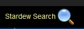

Searches your game setup and returns "things" that match the criteria entered.
Searching methods:
Items Types Searched (Vanilla and from Mods)

Searching methods:
-
Wild Card: Enter the text to search for and end it with an '*'. This will search:
- Name
- Description
- Category
- Type
- Id
- Season
- Fuzzy Search: Enter the text to search for and submit the search.
- Id Search: Enter the Id you wish to search for and submit the search.
- Category Search: Enter 'c:' and the name of the Cateogry you wish to search for. The results will be all items in the specified Category.
- Type Search: Enter 't:' and the name of the Type you want to search for. The results will be all items of the specified Type.
Items Types Searched (Vanilla and from Mods)
- Animals
- Big Craftables
- Buildings
- Clothing
- Crafting
- Fruits
- Furniture
- Machines
- Vegetables
- Weapons
- Want to know to plant this season? Enter the season name and an asterisk (*) and search will retrieve all crops for that season.